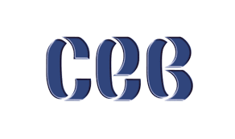

Proyecto Trasversal
Centro de Estudios de Bachillerato
“Lic. Jesus Reyes Heroles”
CEB 6/ 13.
Alumno:César Omar Castro Navarro.
Grupo: 601.
N.L.:4
Esta página cuenta con links de proyectos transversales realizados
en colaboracion con varias materias, el tema abarcado va resumido en la prevención
primaria, secundaria y terciaroia durante un desastre natural en este caso un "sismo".
En este espacio veras las diapositivas del proyecto click..
En este espacio veras el guion en el cual se realizo para el video guion.
En este espacio veras el video sobre el tema del proyecto trasversal video.